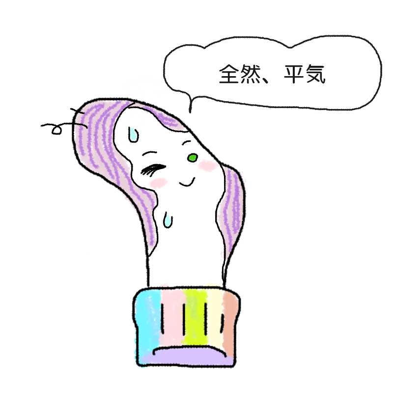
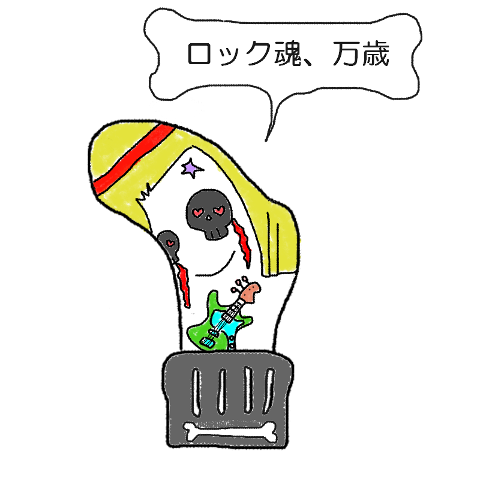

靴下に開いた穴には、
あなたの知られざる本性が隠れている……かもしれません。
気になる穴をクリックしてね。
靴下キャラクター図鑑







※このスタンプには日陰に消えたボツキャラが混ざっています
お知らせ・募集
- スタンプ 公式LINEスタンプ第1弾ができました！
-
投票
好きなキャラクター投票受付中！
（診断結果ページでいいね❤️して推しを教えてね） -
募集中
名無しキャラクターの名前大募集！
（診断結果ページから送ってね。君が考えた名前がついちゃうかも…？）
（面白い名前は下の額縁で随時紹介するよ！）
＼ みんなが応募してくれた名前からピックアップ紹介！ ／
✨ 今日のピックアップ ✨
『親指コンニチハ男』
🏆 じわじわくる賞
「ストレートだけど一番刺さりました！爪はこまめに切りましょう。」
※この診断はただのお遊びです。
※靴下の穴が開く場所には個人差があります。